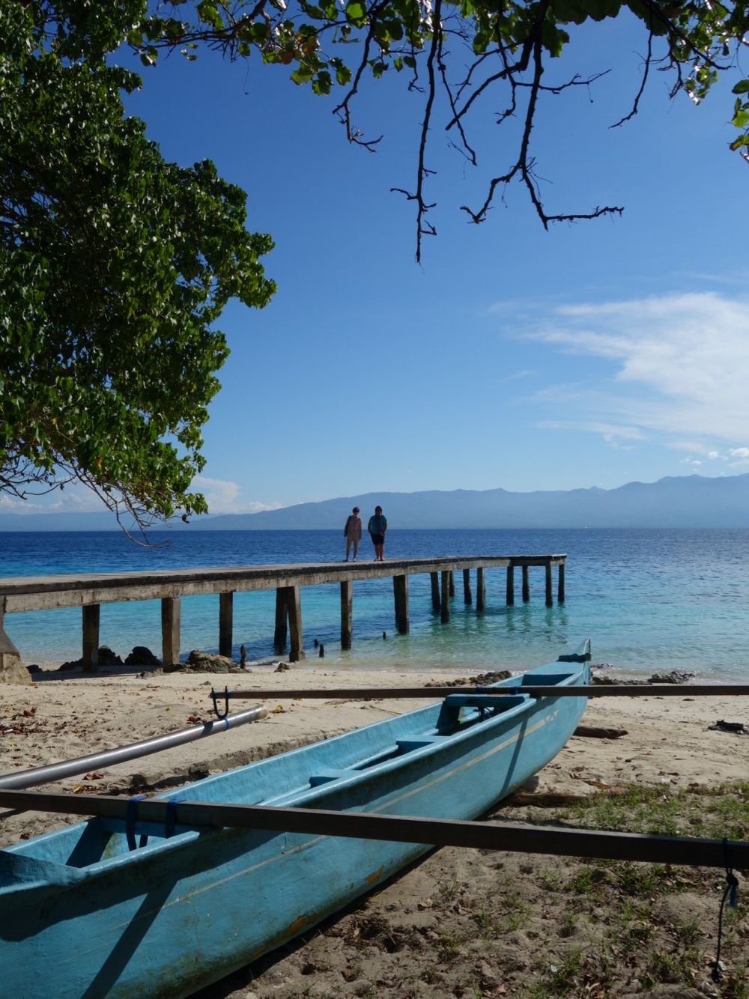
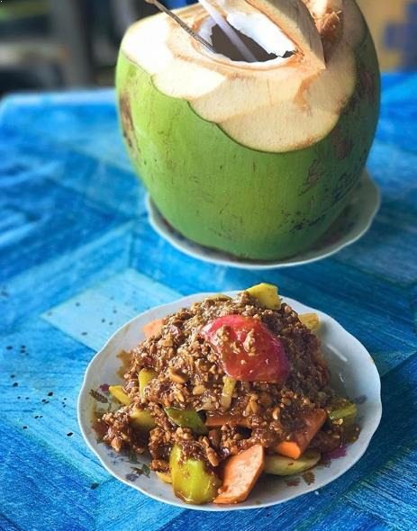
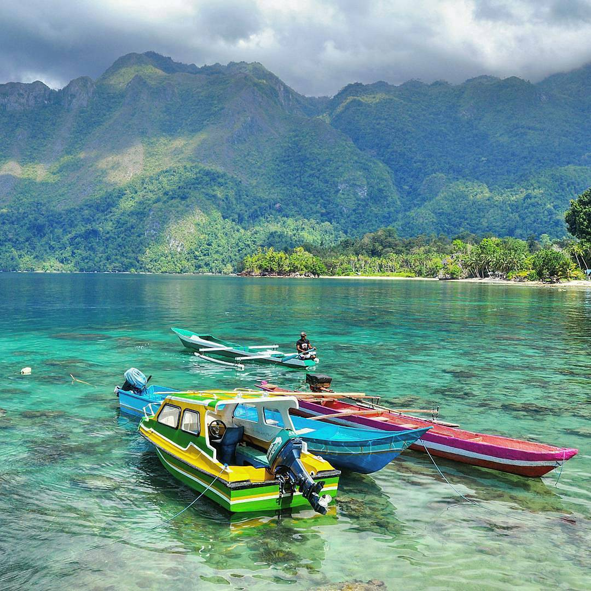

A

M

B

O

N
Ambon adalah ibu kota Provinsi Maluku. Dahulu Ambon dikenal sebagai daerah penghasil
rempah-rempah terbaik dunia. Sampai sekarang pun masih. Selain penghasil rempah-rempah,
Ambon juga dikenal lewat keindahan alamnya yang begitu memukau bagi siapa saja yang mengunjunginya.